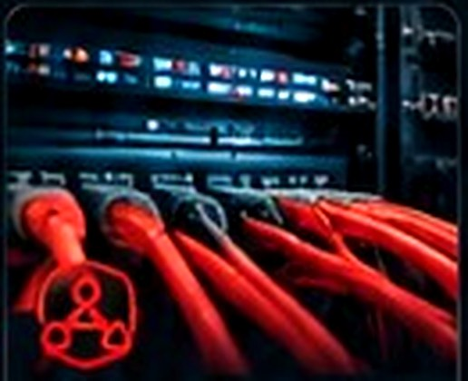
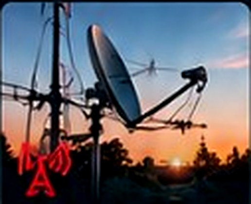

TRZEBIATÓW / REWAL I OKOLICE
Łączymy.
Chronimy.
Wspieramy.
Lokalny dostawca internetu, monitoringu, alarmów i usług IT. Szybka pomoc, profesjonalne rozwiązania i bezpośredni kontakt na terenie gminy Trzebiatów, Rewal i okolic.
Szybka reakcjaLokalny serwis i realne wsparcie
Blisko CiebieTrzebiatów, Rewal i okolice
Bezpośredni kontaktBez infolinii i kolejek
DoświadczenieLokalna znajomość terenu
Kompleksowe usługiDla domu i firmy
NASZE USŁUGI
Technologia dla Twoich potrzeb
Internet, bezpieczeństwo i pełne wsparcie IT — wszystko w jednym miejscu.
Zobacz wszystkie usługiMonitoring i alarmy
Kamery, systemy alarmowe, kontrola dostępu. Bezpieczny dom i firma.
Poznaj rozwiązania


OBSŁUGIWANY REGION
Lokalnie. Zawsze blisko.
Świadczymy usługi na terenie gminy Trzebiatów, Rewal i w okolicznych miejscowościach. Dzięki lokalności możemy sprawnie reagować i zapewniać bezpośrednie wsparcie.
Sprawna realizacjaBez zbędnych, ogólnopolskich ścieżek
Znamy lokalną infrastrukturęi specyfikę techniczną okolicy
Bez zbędnych procedurRozmawiasz bezpośrednio z fachowcem
WYBRANA MIEJSCOWOŚĆTrzebiatów54.06263°N · 15.26566°EDostępność usług potwierdzamy indywidualnie.Zobacz w OpenStreetMap ↗
Podkład satelitarny online · © Esri / Maxar
Działamy w regionie:
... i nie tylko.
DLACZEGO MAD-NET?
Realne wsparcie. Bez zbędnych procedur.
Szybki serwis i pomoc
Znamy teren, jesteśmy blisko. Reagujemy sprawnie, bo działamy lokalnie.
Bez kolejek i infolinii
Bez skomplikowanych systemów zgłoszeń. Rozmawiasz z nami bezpośrednio.
Indywidualne podejście
Dobieramy rozwiązania do Twoich potrzeb — domu, firmy lub obiektu.
Wieloletnia praktyka
Znamy wyzwania związane z lokalną infrastrukturą telekomunikacyjną.
JAK TO DZIAŁA?
Od zapytania do działania — szybko i prosto.
- 1
Skontaktuj się z nami
Telefon, formularz lub e-mail.
- 2
Ustalamy potrzeby
Dobieramy najlepsze rozwiązania.
- 3
Realizacja i montaż
Sprawna instalacja w dogodnym terminie.
- 4
Wsparcie i serwis
Jesteśmy do dyspozycji również po montażu.
NASZE PODEJŚCIE / LOKALNE RELACJE
Zaufanie budowane
na lokalnych relacjach
Stawiamy na bezpośredni kontakt, sprawny serwis i rozwiązania dopasowane do potrzeb naszych sąsiadów.
Znajdź MAD-NET w Google“
Internet, monitoring i wsparcie techniczne — jeden lokalny kontakt zamiast wielu oddzielnych dostawców.
KompleksowośćRozwiązania pod jednym dachem“
Znajomość infrastruktury i realiów regionu ułatwia dobranie rozwiązania do konkretnej lokalizacji.
LokalnośćTrzebiatów, Rewal i okolice“
Po wykonanej instalacji nadal możesz liczyć na pomoc i bezpośredni kontakt z zespołem.
WsparcieRównież po montażuSKONTAKTUJ SIĘ Z NAMI
Porozmawiajmy o Twoich potrzebach.
Masz pytania? Potrzebujesz wyceny? Chcesz sprawdzić dostępność internetu? Skontaktuj się z nami — chętnie pomożemy.